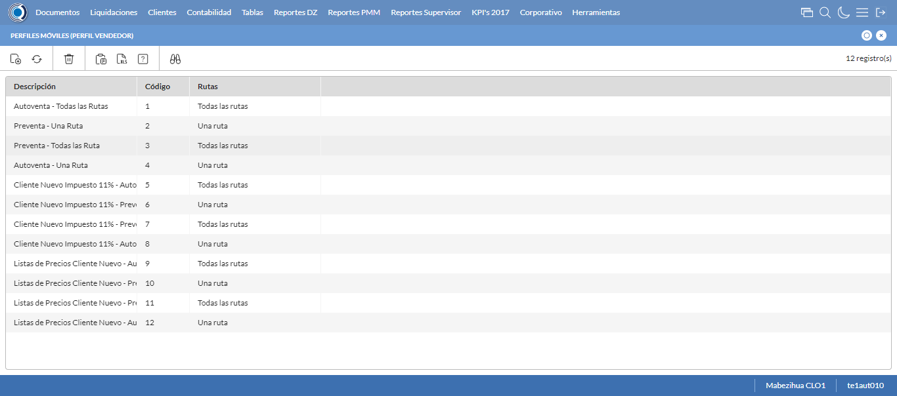
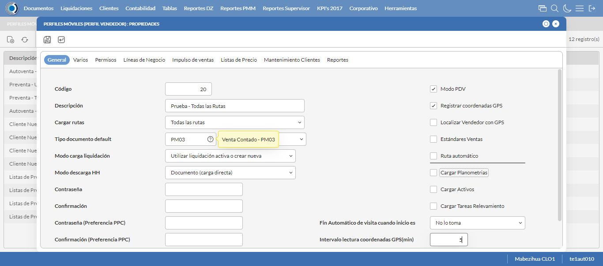
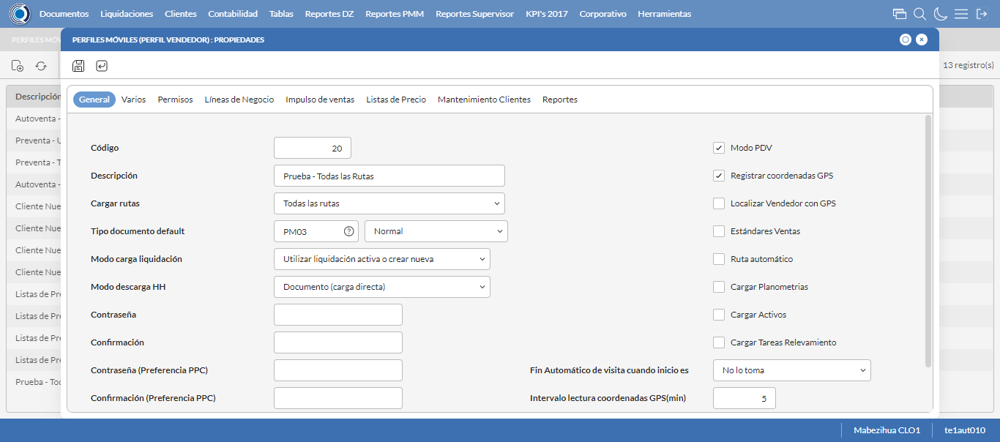
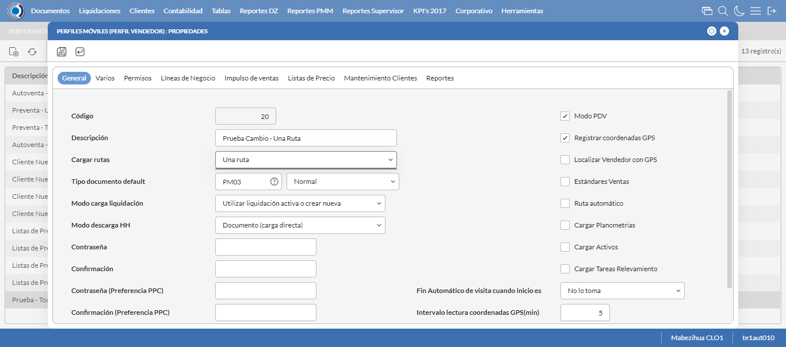

Desarrollado por : Area de Testing PWST
Fecha y hora de inicio : 2023-04-20 18:43:17
Duracion : 0:03:11.915886
Resultado : Total 8，Correctos 6 ，Errores 2 ，Taza de resultado 75.00%
Resumen 75.00% Errores 2 Fallidos 0 Correctos 6 Test realizados 8
| Caso de Prueba | Total | Correctos | Fallido | Error | Detalles | Captura del error |
| PerfilesMoviles.Test: Escenario 1 de Perfiles Moviles | 8 | 6 | 0 | 2 | Detalles | |
test |
ft1_1: 2023-04-20 18:43:19,326 - root - INFO - Se abre el chrome
2023-04-20 18:43:21,162 - root - INFO - Entra a la URL
2023-04-20 18:43:21,289 - root - INFO - Maximiza la pantalla
Traceback (most recent call last):
File "C:\Users\gerar\AppData\Local\Programs\Python\Python311\Lib\site-packages\selenium\webdriver\remote\switch_to.py", line 88, in frame
frame_reference = self._driver.find_element(By.ID, frame_reference)
^^^^^^^^^^^^^^^^^^^^^^^^^^^^^^^^^^^^^^^^^^^^^^^^^
File "C:\Users\gerar\AppData\Local\Programs\Python\Python311\Lib\site-packages\selenium\webdriver\remote\webdriver.py", line 861, in find_element
return self.execute(Command.FIND_ELEMENT, {"using": by, "value": value})["value"]
^^^^^^^^^^^^^^^^^^^^^^^^^^^^^^^^^^^^^^^^^^^^^^^^^^^^^^^^^^^^^^^^^
File "C:\Users\gerar\AppData\Local\Programs\Python\Python311\Lib\site-packages\selenium\webdriver\remote\webdriver.py", line 444, in execute
self.error_handler.check_response(response)
File "C:\Users\gerar\AppData\Local\Programs\Python\Python311\Lib\site-packages\selenium\webdriver\remote\errorhandler.py", line 249, in check_response
raise exception_class(message, screen, stacktrace)
selenium.common.exceptions.NoSuchElementException: Message: no such element: Unable to locate element: {"method":"css selector","selector":"[id="mainFrame"]"}
(Session info: chrome=112.0.5615.138)
Stacktrace:
Backtrace:
GetHandleVerifier [0x0091DCE3+50899]
(No symbol) [0x008AE111]
(No symbol) [0x007B5588]
(No symbol) [0x007E08F9]
(No symbol) [0x007E0AFB]
(No symbol) [0x0080F902]
(No symbol) [0x007FB944]
(No symbol) [0x0080E01C]
(No symbol) [0x007FB6F6]
(No symbol) [0x007D7708]
(No symbol) [0x007D886D]
GetHandleVerifier [0x00B83EAE+2566302]
GetHandleVerifier [0x00BB92B1+2784417]
GetHandleVerifier [0x00BB327C+2759788]
GetHandleVerifier [0x009B5740+672048]
(No symbol) [0x008B8872]
(No symbol) [0x008B41C8]
(No symbol) [0x008B42AB]
(No symbol) [0x008A71B7]
BaseThreadInitThunk [0x76047D49+25]
RtlInitializeExceptionChain [0x772CB74B+107]
RtlClearBits [0x772CB6CF+191]
During handling of the above exception, another exception occurred:
Traceback (most recent call last):
File "C:\Users\gerar\AppData\Local\Programs\Python\Python311\Lib\site-packages\selenium\webdriver\remote\switch_to.py", line 91, in frame
frame_reference = self._driver.find_element(By.NAME, frame_reference)
^^^^^^^^^^^^^^^^^^^^^^^^^^^^^^^^^^^^^^^^^^^^^^^^^^^
File "C:\Users\gerar\AppData\Local\Programs\Python\Python311\Lib\site-packages\selenium\webdriver\remote\webdriver.py", line 861, in find_element
return self.execute(Command.FIND_ELEMENT, {"using": by, "value": value})["value"]
^^^^^^^^^^^^^^^^^^^^^^^^^^^^^^^^^^^^^^^^^^^^^^^^^^^^^^^^^^^^^^^^^
File "C:\Users\gerar\AppData\Local\Programs\Python\Python311\Lib\site-packages\selenium\webdriver\remote\webdriver.py", line 444, in execute
self.error_handler.check_response(response)
File "C:\Users\gerar\AppData\Local\Programs\Python\Python311\Lib\site-packages\selenium\webdriver\remote\errorhandler.py", line 249, in check_response
raise exception_class(message, screen, stacktrace)
selenium.common.exceptions.NoSuchElementException: Message: no such element: Unable to locate element: {"method":"css selector","selector":"[name="mainFrame"]"}
(Session info: chrome=112.0.5615.138)
Stacktrace:
Backtrace:
GetHandleVerifier [0x0091DCE3+50899]
(No symbol) [0x008AE111]
(No symbol) [0x007B5588]
(No symbol) [0x007E08F9]
(No symbol) [0x007E0AFB]
(No symbol) [0x0080F902]
(No symbol) [0x007FB944]
(No symbol) [0x0080E01C]
(No symbol) [0x007FB6F6]
(No symbol) [0x007D7708]
(No symbol) [0x007D886D]
GetHandleVerifier [0x00B83EAE+2566302]
GetHandleVerifier [0x00BB92B1+2784417]
GetHandleVerifier [0x00BB327C+2759788]
GetHandleVerifier [0x009B5740+672048]
(No symbol) [0x008B8872]
(No symbol) [0x008B41C8]
(No symbol) [0x008B42AB]
(No symbol) [0x008A71B7]
BaseThreadInitThunk [0x76047D49+25]
RtlInitializeExceptionChain [0x772CB74B+107]
RtlClearBits [0x772CB6CF+191]
During handling of the above exception, another exception occurred:
Traceback (most recent call last):
File "C:\xampp\htdocs\versiones\automatizaciones\AutoPWST\01PM\testCase\PerfilesMoviles.py", line 31, in test
self.driver.switch_to.frame("mainFrame")
File "C:\Users\gerar\AppData\Local\Programs\Python\Python311\Lib\site-packages\selenium\webdriver\remote\switch_to.py", line 93, in frame
raise NoSuchFrameException(frame_reference)
selenium.common.exceptions.NoSuchFrameException: Message: mainFrame
|
|
||||
test_000: Ingresa a la base de datos |
pt1_2: 2023-04-20 18:43:24,408 - root - INFO - Escribe el usuario
2023-04-20 18:43:24,505 - root - INFO - Escribe la contraseña
2023-04-20 18:43:24,611 - root - INFO - Se dio clic en el boton ingresar
2023-04-20 18:43:25,851 - root - INFO - Ejecutar Enterprise
2023-04-20 18:43:29,894 - root - INFO - Cambia entre pestañas
|
|
||||
test_001: Abre menu y ejecuta pantalla |
pt1_3: 2023-04-20 18:44:42,381 - root - INFO - Se ingreso a la pantalla mediante el buscador porque fallo el ingreso por menus
2023-04-20 18:44:42,391 - root - INFO - La función buscador funciona de manera correcta.
2023-04-20 18:44:43,959 - root - INFO - La pantalla ejecutada es Perfiles Moviles
2023-04-20 18:44:43,959 - root - INFO - Captura: C:\xampp\htdocs\versiones\automatizaciones\AutoPWST\01PM\report\img screen：20230420_18_44_43.png
2023-04-20 18:44:44,121 - root - INFO - Se presiona el boton 'Nuevo', para crear un nuevo registro.
|
 | ||||
test_002: Abre la ventana de nuevo y crear un registro |
pt1_4: 2023-04-20 18:44:44,680 - root - INFO - Se abrio la pantalla para el ingreso de un registro nuevo.
2023-04-20 18:44:44,743 - root - INFO - Ingresa el codigo del nuevo registro
2023-04-20 18:44:44,888 - root - INFO - Ingresa la Descripcion del nuevo registro
2023-04-20 18:44:45,276 - root - INFO - Se selecciono la opción Todas las Rutas
2023-04-20 18:44:45,367 - root - INFO - Ingresa el Tipo documento default del nuevo registro
2023-04-20 18:44:45,741 - root - INFO - Se selecciono la opción Normal
2023-04-20 18:44:46,209 - root - INFO - Se selecciono el registro de Modo carga liquidación
2023-04-20 18:44:46,583 - root - INFO - Se selecciono la opción Documento (carga directa)
2023-04-20 18:44:46,696 - root - INFO - Se dió click en el checkbox Modo PDV
2023-04-20 18:44:46,793 - root - INFO - Se dió click en el checkbox Registrar coordenadas GPS
2023-04-20 18:44:47,157 - root - INFO - Se dió click en la opción No lo toma
2023-04-20 18:44:47,254 - root - INFO - Ingresa el Intervalo lectura coordenadas GPS(min) del nuevo registro
2023-04-20 18:44:47,254 - root - INFO - Captura: C:\xampp\htdocs\versiones\automatizaciones\AutoPWST\01PM\report\img screen：20230420_18_44_47.png
2023-04-20 18:44:49,438 - root - INFO - Se hace el cambio de pestaña Varios para continuar con el registro nuevo
2023-04-20 18:44:49,523 - root - INFO - Se dió click en el checkbox Cargar resumen de cuentas únicamente del vendedor de la ruta
2023-04-20 18:44:49,592 - root - INFO - Se dió click en el checkbox Verificar límite de crédito
2023-04-20 18:44:49,661 - root - INFO - Se dió click en el checkbox Verificar opción 'guardar como' del tipo de documento
2023-04-20 18:44:49,731 - root - INFO - Se dió click en el checkbox Permitir Pagos
2023-04-20 18:44:50,822 - root - INFO - Se dió click en el botón espacio para mover la pantalla hacía abajo
2023-04-20 18:44:52,200 - root - INFO - Se selecciono el registro de Disco de Datos
2023-04-20 18:44:52,836 - root - INFO - Se dió click en la opción Autoventa
2023-04-20 18:44:52,923 - root - INFO - Se dió click en el checkbox Enviar documentos de inmediato al servidor.
2023-04-20 18:44:52,987 - root - INFO - Se hace el cambio a la pestaña Permisos para continuar con el registro nuevo
2023-04-20 18:44:53,568 - root - INFO - Se presiona el boton 'Nuevo de la pestaña Permiso' , para crear un nuevo registro.
2023-04-20 18:44:55,021 - root - INFO - Se dió click en la opción Inihibir Georeferenciación
2023-04-20 18:44:55,101 - root - INFO - Se presiona el boton 'Guardar de la pestaña Permiso', para guardar el registro.
2023-04-20 18:44:55,370 - root - INFO - Se presiona el boton 'Nuevo de la pestaña Permiso' , para crear un nuevo registro.
2023-04-20 18:44:56,280 - root - INFO - Se dió click en la opción Anular Documentos
2023-04-20 18:44:56,363 - root - INFO - Se presiona el boton 'Guardar de la pestaña Permiso', para guardar el registro.
2023-04-20 18:44:56,550 - root - INFO - Se hace el cambio a la pestaña Lineas de Negocio para continuar con el registro nuevo
2023-04-20 18:44:57,161 - root - INFO - Se presiona el boton 'Nuevo de la pestaña Permiso' , para crear un nuevo registro.
2023-04-20 18:44:58,613 - root - INFO - Se selecciono el registro de Linea de negocio
2023-04-20 18:44:58,894 - root - INFO - Se presiona el boton 'Guardar de la pestaña Linea de Negocio', para guardar el registro.
2023-04-20 18:44:59,153 - root - INFO - Se presiona el boton 'Nuevo de la pestaña Permiso' , para crear un nuevo registro.
2023-04-20 18:45:00,636 - root - INFO - Se selecciono el registro de Linea de negocio
2023-04-20 18:45:00,857 - root - INFO - Se presiona el boton 'Guardar de la pestaña Linea de Negocio', para guardar el registro.
2023-04-20 18:45:01,135 - root - INFO - Se presiona el boton 'Nuevo de la pestaña Permiso' , para crear un nuevo registro.
2023-04-20 18:45:02,605 - root - INFO - Se selecciono el registro de Linea de negocio
2023-04-20 18:45:02,854 - root - INFO - Se presiona el boton 'Guardar de la pestaña Linea de Negocio', para guardar el registro.
2023-04-20 18:45:03,134 - root - INFO - Se hace el cambio a la pestaña Impulso Ventas para continuar con el registro nuevo
2023-04-20 18:45:03,817 - root - INFO - Se presiona el boton 'Nuevo de la pestaña Impulso de Ventas' , para crear un nuevo registro.
2023-04-20 18:45:04,471 - root - INFO - Ingresa el Articulo del nuevo registro
2023-04-20 18:45:06,600 - root - INFO - Se presiona el boton 'Guardar de la pestaña Impulso de Ventas', para guardar el registro.
2023-04-20 18:45:08,643 - root - INFO - Se presiona el boton 'Nuevo de la pestaña Impulso de Ventas' , para crear un nuevo registro.
2023-04-20 18:45:09,296 - root - INFO - Ingresa el Articulo del nuevo registro
2023-04-20 18:45:11,491 - root - INFO - Se presiona el boton 'Guardar de la pestaña Impulso de Ventas', para guardar el registro.
2023-04-20 18:45:13,539 - root - INFO - Se presiona el boton 'Nuevo de la pestaña Impulso de Ventas' , para crear un nuevo registro.
2023-04-20 18:45:14,189 - root - INFO - Ingresa el Articulo del nuevo registro
2023-04-20 18:45:16,388 - root - INFO - Se presiona el boton 'Guardar de la pestaña Impulso de Ventas', para guardar el registro.
2023-04-20 18:45:18,435 - root - INFO - Se presiona el boton 'Nuevo de la pestaña Impulso de Ventas' , para crear un nuevo registro.
2023-04-20 18:45:19,118 - root - INFO - Ingresa el Articulo del nuevo registro
2023-04-20 18:45:21,348 - root - INFO - Se presiona el boton 'Guardar de la pestaña Impulso de Ventas', para guardar el registro.
2023-04-20 18:45:23,396 - root - INFO - Se presiona el boton 'Nuevo de la pestaña Impulso de Ventas' , para crear un nuevo registro.
2023-04-20 18:45:24,049 - root - INFO - Ingresa el Articulo del nuevo registro
2023-04-20 18:45:26,244 - root - INFO - Se presiona el boton 'Guardar de la pestaña Impulso de Ventas', para guardar el registro.
2023-04-20 18:45:28,313 - root - INFO - Se hace el cambio a la pestaña Mantenimiento Clientes para continuar con el registro nuevo
2023-04-20 18:45:28,920 - root - INFO - Se dió click en el checkbox Permiso agregar nuevos clientes
2023-04-20 18:45:28,995 - root - INFO - Se dió click en el checkbox Permiso modificar clientes existentes
2023-04-20 18:45:30,011 - root - INFO - Se selecciono el registro de Ruta Referencia
2023-04-20 18:45:30,194 - root - INFO - Se dió click en el checkbox Clasificación 1
2023-04-20 18:45:30,363 - root - INFO - Se dió click en el checkbox Clasificación 2
2023-04-20 18:45:30,528 - root - INFO - Se dió click en el checkbox Clasificación 3
2023-04-20 18:45:30,689 - root - INFO - Se dió click en el checkbox Colonia
2023-04-20 18:45:30,812 - root - INFO - Se dió click en el checkbox Codigo Postal
2023-04-20 18:45:30,977 - root - INFO - Se dió click en el checkbox Direccion
2023-04-20 18:45:31,119 - root - INFO - Se dió click en el checkbox Entorno PDV
2023-04-20 18:45:31,237 - root - INFO - Se dió click en el checkbox Esquina 1
2023-04-20 18:45:31,336 - root - INFO - Se dió click en el checkbox Esquina 2
2023-04-20 18:45:31,445 - root - INFO - Se dió click en el checkbox Paises
2023-04-20 18:45:31,545 - root - INFO - Se dió click en el checkbox Departamento
2023-04-20 18:45:31,717 - root - INFO - Se dió click en el checkbox Localidad
2023-04-20 18:45:31,819 - root - INFO - Se da clic en el boton Guardar; se debe crear un nuevo registro.
|
 | ||||
test_003: Repite el Registro |
ft1_5: 2023-04-20 18:45:32,407 - root - INFO - Se presiona el boton 'Refrescar', para crear un nuevo registro igual al anterior.
2023-04-20 18:45:34,470 - root - INFO - Se presiona el boton 'Nuevo', para crear un nuevo registro igual al anterior.
2023-04-20 18:45:35,032 - root - INFO - Se abrio la pantalla para el ingreso de un registro nuevo.
2023-04-20 18:45:35,092 - root - INFO - Ingresa el codigo del nuevo registro
2023-04-20 18:45:35,228 - root - INFO - Ingresa la Descripcion del nuevo registro
2023-04-20 18:45:35,618 - root - INFO - Se selecciono la opción Todas las Rutas
2023-04-20 18:45:35,732 - root - INFO - Ingresa el Tipo documento default del nuevo registro
2023-04-20 18:45:36,102 - root - INFO - Se selecciono la opción Normal
2023-04-20 18:45:36,589 - root - INFO - Se selecciono el registro de Modo carga liquidación
2023-04-20 18:45:36,982 - root - INFO - Se selecciono la opción Documento (carga directa)
2023-04-20 18:45:37,072 - root - INFO - Se dió click en el checkbox Modo PDV
2023-04-20 18:45:37,150 - root - INFO - Se dió click en el checkbox Registrar coordenadas GPS
2023-04-20 18:45:37,525 - root - INFO - Se dió click en la opción No lo toma
2023-04-20 18:45:37,617 - root - INFO - Ingresa el Intervalo lectura coordenadas GPS(min) del nuevo registro
2023-04-20 18:45:39,692 - root - INFO - Se da clic en el boton Guardar; NO se debe crear un nuevo registro.
2023-04-20 18:45:41,804 - root - INFO - Se da clic en el boton del mensaje de registro duplicado
2023-04-20 18:45:43,805 - root - INFO - Captura: C:\xampp\htdocs\versiones\automatizaciones\AutoPWST\01PM\report\img screen：20230420_18_45_43.png
2023-04-20 18:45:44,003 - root - INFO - Se presiona el boton 'Cerrar', para cerrar el mensaje de duplicidad de llave primaria
2023-04-20 18:45:45,144 - root - ERROR - No se dió click en el botón Cerrar de la ventana., validar que la acción anterior haya finalizado, que el xpath sea el correcto o que la página no presente lentitud
2023-04-20 18:45:48,146 - root - INFO - Captura: C:\xampp\htdocs\versiones\automatizaciones\AutoPWST\01PM\report\img screen：20230420_18_45_48.png
2023-04-20 18:45:48,378 - root - INFO - Se presiona el boton 'Cerrar', para cerrar la pantalla.
Traceback (most recent call last):
File "C:\xampp\htdocs\versiones\automatizaciones\AutoPWST\01PM\testCase\PerfilesMoviles.py", line 91, in test_003
raise Exception()
Exception
|
 | ||||
test_004: Modificar el registro |
pt1_6: 2023-04-20 18:45:48,561 - root - INFO - Se presiona el boton 'Refrescar', para proceder a modificar el registro.
2023-04-20 18:45:51,160 - root - INFO - Se da clic en el registro creado, para proceder a modificarlo.
2023-04-20 18:45:51,813 - root - INFO - Se modifica el contenido del campo Observaciones 1
2023-04-20 18:45:52,194 - root - INFO - Se selecciono la opción Una Ruta
2023-04-20 18:45:52,195 - root - INFO - Captura: C:\xampp\htdocs\versiones\automatizaciones\AutoPWST\01PM\report\img screen：20230420_18_45_52.png
2023-04-20 18:45:52,367 - root - INFO - Se hace el cambio de pestaña Permisos para continuar con la modificación del registro
2023-04-20 18:45:52,562 - root - INFO - Se hace el cambio a la pestaña Lineas de Negocio para continuar con la modificación del registro
2023-04-20 18:45:52,756 - root - INFO - Se da clic en el boton Guardar; se debe modificar la informacion del registro.
|
 | ||||
test_005: Eliminar el registro creado |
pt1_7: 2023-04-20 18:45:54,797 - root - INFO - Se presiona el boton 'Refrescar', para proceder a eliminar el registro.
2023-04-20 18:45:57,371 - root - INFO - Se da clic en el registro creado, para proceder a eliminarlo.
2023-04-20 18:45:57,947 - root - INFO - Se hace el cambio de pestaña Permisos para continuar con la eliminación del registro
2023-04-20 18:45:59,035 - root - INFO - Se da clic en el primer registro de Permisos, para proceder a eliminarlo.
2023-04-20 18:45:59,104 - root - INFO - Se presiona el boton 'Eliminar de Permiso', para eliminar el segundo registro.
2023-04-20 18:46:00,685 - root - INFO - Se da clic en el segundo registro de Permisos, para proceder a Eliminarlo.
2023-04-20 18:46:00,726 - root - INFO - Se presiona el boton 'Eliminar de Permiso', para eliminar el segundo registro.
2023-04-20 18:46:01,797 - root - INFO - Se hace el cambio a la pestaña Lineas de Negocio para continuar con la eliminación del registro
2023-04-20 18:46:02,887 - root - INFO - Se da clic en el primer registro de Linea de Negocio, para proceder a Eliminarlo.
2023-04-20 18:46:02,965 - root - INFO - Se presiona el boton 'Eliminar de Linea de Negocio', para eliminar el primer registro.
2023-04-20 18:46:04,537 - root - INFO - Se da clic en el segundo registro Linea de negocio, para proceder a Eliminarlo.
2023-04-20 18:46:04,596 - root - INFO - Se presiona el boton 'Eliminar de Linea de Negocio', para eliminar el segundo registro.
2023-04-20 18:46:06,166 - root - INFO - Se da clic en el tercer registro Lineas de Negocio, para proceder a Eliminarlo.
2023-04-20 18:46:06,209 - root - INFO - Se presiona el boton 'Eliminar de Linea de Negocio', para eliminar el tercer registro.
2023-04-20 18:46:07,275 - root - INFO - Se hace el cambio de pestaña Impulso Ventas para continuar con la modificación del registro
2023-04-20 18:46:08,362 - root - INFO - Se da clic en el registro creado, para proceder a modificarlo.
2023-04-20 18:46:08,441 - root - INFO - Se presiona el boton 'Eliminar de Impulso Ventas', para eliminar el primer registro.
2023-04-20 18:46:10,020 - root - INFO - Se da clic en el registro creado, para proceder a modificarlo.
2023-04-20 18:46:10,064 - root - INFO - Se presiona el boton 'Eliminar de Impulso Ventas', para eliminar el segundo registro.
2023-04-20 18:46:11,632 - root - INFO - Se da clic en el registro creado, para proceder a modificarlo.
2023-04-20 18:46:11,673 - root - INFO - Se presiona el boton 'Eliminar de Impulso Ventas', para eliminar el tercer registro.
2023-04-20 18:46:13,248 - root - INFO - Se da clic en el registro creado, para proceder a modificarlo.
2023-04-20 18:46:13,289 - root - INFO - Se presiona el boton 'Eliminar de Impulso Ventas', para eliminar el cuarto registro.
2023-04-20 18:46:14,863 - root - INFO - Se da clic en el registro creado, para proceder a modificarlo.
2023-04-20 18:46:14,904 - root - INFO - Se presiona el boton 'Eliminar de Impulso Ventas', para eliminar el quinto registro.
2023-04-20 18:46:15,972 - root - INFO - Se hace el cambio a la pestaña Mantenimiento Clientes para continuar con la eliminación del registro
2023-04-20 18:46:16,568 - root - INFO - Se dió click en el checkbox Clasificación 1
2023-04-20 18:46:16,670 - root - INFO - Se dió click en el checkbox Clasificación 2
2023-04-20 18:46:16,772 - root - INFO - Se dió click en el checkbox Clasificación 3
2023-04-20 18:46:16,874 - root - INFO - Se dió click en el checkbox Colonia
2023-04-20 18:46:16,980 - root - INFO - Se dió click en el checkbox Codigo Postal
2023-04-20 18:46:17,086 - root - INFO - Se dió click en el checkbox Direccion
2023-04-20 18:46:17,198 - root - INFO - Se dió click en el checkbox Entorno PDV
2023-04-20 18:46:17,358 - root - INFO - Se dió click en el checkbox Esquina 1
2023-04-20 18:46:17,477 - root - INFO - Se dió click en el checkbox Esquina 2
2023-04-20 18:46:17,593 - root - INFO - Se dió click en el checkbox Paises
2023-04-20 18:46:17,702 - root - INFO - Se dió click en el checkbox Departamento
2023-04-20 18:46:17,824 - root - INFO - Se dió click en el checkbox Localidad
2023-04-20 18:46:17,922 - root - INFO - Se da clic en el boton Guardar; se debe modificar la informacion del registro.
2023-04-20 18:46:18,486 - root - INFO - Se da clic en el registro creado, para proceder a eliminarlo.
2023-04-20 18:46:18,556 - root - INFO - Se presiona el boton 'Eliminar', para eliminar el registro.
2023-04-20 18:46:20,557 - root - INFO - Captura: C:\xampp\htdocs\versiones\automatizaciones\AutoPWST\01PM\report\img screen：20230420_18_46_20.png
2023-04-20 18:46:20,698 - root - INFO - Se confirma el eliminado del registro
2023-04-20 18:46:20,870 - root - INFO - Se presiona el boton 'Refrescar', para verificar si el registro ha sido eliminado.
2023-04-20 18:46:22,936 - root - INFO - Se presiona el boton 'Cerrar', para cerrar la pantalla de Perfiles Moviles.
|

|
||||
test_006: Cerrar_Navegador |
pt1_8: 2023-04-20 18:46:29,496 - root - INFO - Se cierra chrome
|
|
||||
| Caso de prueba | 8 | 6 | 0 | 2 | Taza de resultado：75.00% | |